Penn Electric Racing Mechanical Challenge: Brake Pedal Design
a full Formula SAE braking system derived from first principles, in one week
- project
- 03 of 05
- event
- Penn Electric Racing
- credit
- Solo design project, completed in one week as the mechanical application challenge for Penn Electric Racing.
01the problem
- Formula SAE is a student contest to design and build a race car
- this was the Penn mechanical application challenge, which i did alone
- the rules demand two independent hydraulic circuits and no brake by wire
- target pressures of 1200 psi front and 400 psi rear had to be validated, not assumed
02from deceleration to hydraulic pressure
- weight transfer under 1.5 g braking moves 740.5 N onto the front axle
- front axle load rises to 1964.8 N while the rear drops to 585.8 N
- tire friction sets the torque each axle must absorb, 748.6 and 223.2 newton meters
- working back through the caliper gives 613 psi front and 183 psi rear required


03pedal and hydraulics
- moment balance about the pivot gives a pedal ratio of 6 to 1
- a 1.0 inch pushrod arm therefore sets a 6.0 inch pedal arm, inside the envelope
- 70 lbf of foot force becomes 420 lbf at the pushrod
- one bore serves both circuits at 0.578 inch calculated, rounded to a 9/16 inch Tilton unit
- balance bar pivot at one quarter length splits that 420 lbf into 315 and 105 lbf



04structural sizing
- structural case uses the rulebook 1500 N foot load, giving 2023 lbf at the pushrod
- bending stress with a safety factor of 2.5 sizes the aluminum arm to 0.625 inch
- steel would need only 0.448 inch but weighs more for the stiffness gained, so aluminum wins
- Euler buckling on the pushrod returns a safety factor of 48.2
- pin shear and bolt bearing return 3.24 and 54.1


05results
- full assembly specified with a bill of materials split into off the shelf and manufactured
- pedal sweeps 14.9 degrees over 1.6 inches of travel
- every structural member clears its safety factor with margin
- two independent circuits mean a failure on one axle still leaves braking on the other